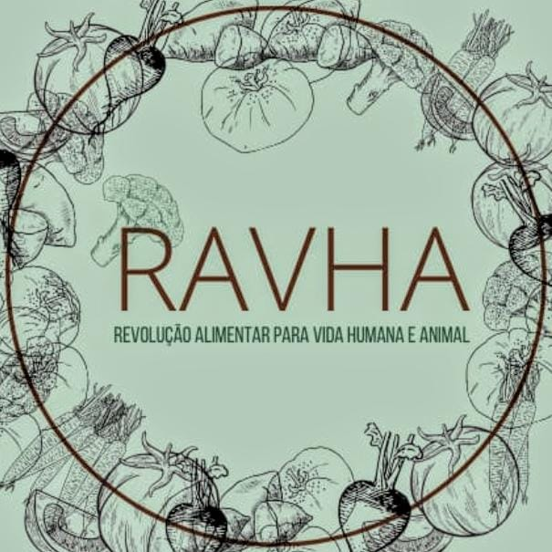

RAHVA:Revolução alimentar pela vida humana e animal
O grupo RAVHA - Revolução Alimentar pela Vida Humana e Animal - consiste na continuidade do eixo norteador SAÚDE E BEM-ESTAR NA PANDEMIA do projeto de extensão intitulado Covid-19: conceito, impactos e perspectivas futuras, que fora desenvolvido de março a dezembro de 2020. Trata-se da proposta, iniciada em dezembro de 2020, de dar continuidade ao eixo norteador supracitado, tendo como desafio não somente responder criticamente ao contexto da pandemia através de uma concepção curricular integradora que articule as diversas áreas e disciplinas do conhecimento em torno de um eixo temático norteador, mas, também, de ampliar e alargar o campo de seus estudos. Neste sentido, o grupo RAVHA não somente desenvolveu estudos e atividades voltados para o contexto específico da saúde humana na pandemia, mas, sobretudo, ampliou-se para a compreensão dos modelos de desenvolvimento econômico e de cultura alimentar necessários para a saúde humana, animal e planetária da vida em sociedade.
A Lei 13.666, de 16 de maio de 2018, alterou a LDB com a inclusão da educação alimentar e nutricional no currículo escolar da educação básica no Brasil. A lei tem como objetivo central, além da redução da obesidade, assegurar, no processo de ensino-aprendizagem dos estudantes, uma educação voltada para a transformação da cultura alimentar, de modo a promover novos hábitos alimentares através de uma formação nutricional de qualidade dentro das condições sociais concretas dos estudantes. A natureza transversal da legislação traz, para o território acadêmico e escolar, a necessidade do diálogo e do debate transdisciplinar a respeito da importância e da necessidade da valorização da produção alimentar e da culinária como prática emancipatória, sob a luz dos princípios da autonomia, do autocuidado e do respeito à sociobiodiversidade.
O cumprimento desta lei, o Ofício 005-2023 da DIREN para a coordenação do Ensino Médio Integrado dos Cursos Técnicos do CEFET/RJ campus Nova Friburgo traz exigências que, dentre elas, buscam incluir a temática obrigatória de Educação Alimentar e Nutricional no currículo escolar. Nesse sentido, no ano de 2023, o projeto RAVHA, além de manter sua proposta original da realização de estudos, debates e conscientização acerca da alimentação para a saúde humana e animal, traz como novidade, em um de seus eixos de trabalho, a promoção de uma educação alimentar e nutricional, de acordo com a legislação vigente, para a comunidade interna escolar e acadêmica. Ou seja, diante das legislações vigentes e das exigências educacionais apontadas no Oficio 005-2023 da DIREN, o projeto RAVHA tem como proposta, a partir de 2023, tornar-se uma referência institucional para o ensino médio integrado em termos de educação alimentar e nutricional no campus Nova Friburgo, tendo em vista que não existe nenhum outro projeto em desenvolvimento no campus nesse sentido.
Desta forma, o projeto RAVHA se constitui como um projeto fundamental para o currículo escolar e acadêmico, sendo reconhecido pelo colegiado do Ensino Médio Integrado dos Cursos Técnicos do CEFET/RJ campus Nova Friburgo como a principal frente de trabalho que atende às exigências apontadas. Considerando a literatura científica mundial e o importante material disponível a respeito dos benefícios sociais, ambientais, econômicos, éticos e humanos das dietas vegetarianas restritas, o grupo RAVHA tem como proposta fundamental se concentrar na temática dos beneficios das dietas vegetarianas integrais restritas e baseadas em plantas.
Imagens do projeto

Um outro lanche é possível

Lanche Saudavel na agenda plural do dia da mata atlantica

Mural nossos pets na agenda plural em defesa a causa animal